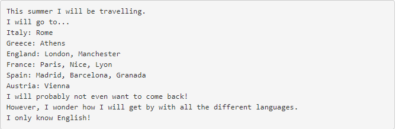

Files are data that is saved in the computer memory. A document containing an essay about the roman empire that is saved in a computer is a type of file.
In Python and other programming languages, one can read, write and open, close a file, among other things.
There are different ways to read a line, for example, one can read the whole text file, or one line or multiple lines from the file.
To read a file, the programmer needs to first open the file, then type "r" after the name of the file. The "r" tells Python that the file will be read after opening. Then the programmer needs to print the variable name that has the file and type the read function ( read() ) afterwards.
Results:
In order to iterate through a file, the programmer needs to first open the text file and then create a for loop. In the for loop, the loop needs to iterate through the lines of the text file, so the readlines methods needs to be typed next to the text file in the for loop. And depending on what the programmer wants to do with the text file, they can add an accumulator variable or do something else with the file.
Using the write method, is similar to the reading method, in that the file needs to be open, and that it can be used in for loops. The differences are that instead of typing "r" next to the text file name, the programmer needs to type "w", for write. Another difference is that with the write method, instead of Python reading the text file, the programmer can select parts or all of the characters in the text file and manipulate or change it to something else.
Results:
Results:
A CSV file stands for "Comma Separated Values", and stores tabular data, which is numbers and text. The comma that separates the tabular data is called "delimiter".
In order to read a CSV file, the programmer needs to:
To use the write method on CSV files, the same steps that were used to read CSV files, the only difference is that the programmer doesn't use the CSV reader method, but the CSV reader method. And the programmer can alter the content inside the CSV file.
Results: